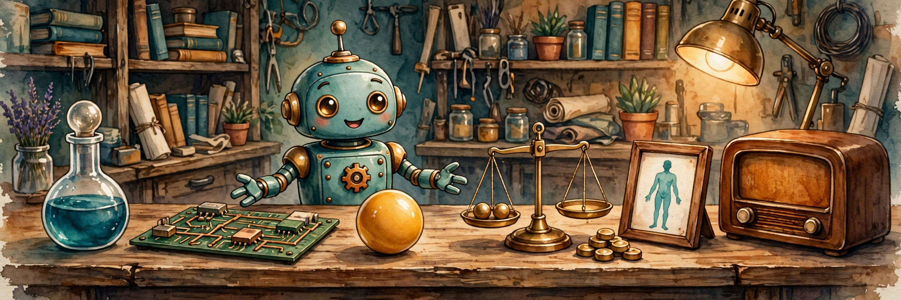

SIX WORKSHOPS → ONE ROOF → EVERY BENCH WORKING
The STEM
Room.
Six of the collection's workshops share one bench: physics, chemistry, electronics, measurement, the body, and radio. They were crowding the hub's front door, so they moved in together — one card on the main hub, one room of their own in here. Nothing else changed: every workshop below is the full room it always was, at the same address it always had. Pick a bench and start.
01 / THE SIX WORKSHOPS
Six benches. Pick one.
Everyday Physics
Play the shot. See the physics.
Shoot pool on a table that draws the reflection angles and hands the momentum over in front of you, launch projectiles on a 60-metre range where gravity bends every flight into the same curve, time a pendulum that only cares about its string, balance a seesaw on one multiplication — and try four experiments at the kitchen table.
Start here: Aim the cue ball off a cushion and watch the two angles come out equal.
Everyday Chemistry
Everything is atoms. Atoms are countable.
See any of 30 elements drawn as an atom, count neutrons step by step, type a formula and watch it counted and weighed, take familiar substances apart, and try eight kitchen experiments that each show a real idea about atoms and molecules.
Start here: Pick oxygen on the atom bench, then weigh C6H12O6 on the formula bench.
Everyday Electronics
One small law runs every circuit.
Run a live circuit and watch Ohm's law happen, solve for any voltage, current, or resistance with the working shown, find the resistor that keeps an LED alive, learn how a crystal radio works with no battery at all — and build one, plus a fruit battery, a paper circuit, and a throwie.
Start here: Close the switch on the circuit bench, then read how the crystal radio hears without a battery.
Everyday Measure
One staircase of tens — and every measurement in the world is standing on it.
The metric system for Americans: climb the prefix ladder (kilo means a thousand of them), convert length, weight, volume, and temperature with the working shown, feel the sizes against a nickel, a paperclip, and a 2-litre bottle, weigh an elephant in both systems at once, dodge the tonne/ton and gallon traps, and read how a unit mix-up cost a Mars orbiter and nearly cost an airliner.
Start here: Climb the ladder: start at kilo, land on centi, and watch 2.5 kilometres become 250,000 centimetres.
Everyday Body
Your body is a universe you carry around.
Pick an organ from a working body atlas and zoom into its story, give the brain a room of its own — twelve regions, surface and deep, with the honest rule that functions emerge from networks — then follow everyday actions across the systems that cooperate to do them, and check your thinking.
Start here: Tap the brain, then open the hippocampus and ask what a memory is made of.
The Radio Room
Turn the dial. The world is playing.
A retro wooden radio that really plays live streams, a Scanner Tuner that finds county scanner feeds, a shelf of everywhere radio lives online — music services, live stations, public radio, scanners, real radios you can tune, and the two-way side of ham and CB — and a short workshop on how each kind of listening works.
Start here: Press the Groove Salad preset and watch the needle slide.
02 / HOW THEY CONNECT
One bench, six trades — and they lean on each other.
Measure is the shared language. The prefix ladder it teaches — milli, kilo, micro — is the price of admission at two other benches: Electronics spends it on milliamps, kilohms, and microfarads, and Chemistry weighs and pours in its grams and litres. Physics plays in the metres per second that Measure teaches your hands to feel.
Electronics explains the Radio Room's oldest trick. The crystal radio — a receiver with no battery at all — is built step by step in Electronics, and the two rooms link to each other both ways. The Radio Room is where that circuit grows up into a whole listening life: live streams, scanners, shortwave, ham and CB.
Body is the machine the other five describe. Physics times its pendulum, chemistry counts its atoms, electronics models its signals, measure sizes it, and radio carries word of it. The brain explorer's honest rule — functions emerge from networks, not from single parts — could be stencilled over the whole bench.
03 / HELP
Help — how The STEM Room works.
The six doors
This page is a landing room, not a workshop: it holds no benches of its own. Each card above is a door into one complete Everyday Cool workshop, with the same description the hub used to carry. Open a door and you are in that room, with its own benches, its own Help menu, and its own links onward.
Did the rooms move?
No. All six workshops keep their folders, their files, and their web addresses exactly as they were — only the hub's front door changed: the main hub now shows one STEM Room card where six cards stood, and this page carries the six. Bookmarks, cross-links between the rooms, and links from outside all keep working, because nothing was moved, renamed, or edited.
Works offline?
Yes. This page is one HTML file, a stylesheet, and the banner — it runs from the files in this folder, including inside the desktop app, and so do the six workshops' own benches. The exceptions are the same as always: the Radio Room's live streams and scanner feeds need the internet, because the sound lives on other people's servers.